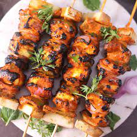
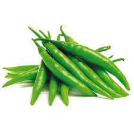
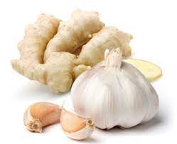
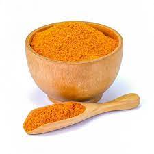
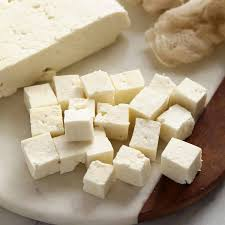
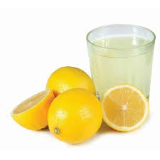
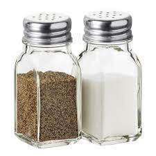

EASY PANEER TIKKA


 OLIVE OIL AS PER REQUIRED
OLIVE OIL AS PER REQUIRED

GREEN CHILLI 1,CHOPPED ONION 1/2 SLICED
ONION 1/2 SLICED

GINGER 1/2 tsp & GARLIC 2 CLOVES GARAM MASALA 1 tsp
GARAM MASALA 1 tsp

TURMERIC POWDER 1/2 tsp CUMIN POWDER 1/2 tsp
CUMIN POWDER 1/2 tsp

PANEER CUBES 200 gms CHILLI POWDER 1 tsp
CHILLI POWDER 1 tsp
 CURD 3/4 CUP
CURD 3/4 CUP

LEMON JUICE 2 tsp
SALTServing : 4
Serving Size: 1/4 cup
Calories: 204.6 Kcal
| Nutrient | Amount Per Serving | % Daily Value* |
|---|---|---|
| Calories | 250 | - |
| Total Fat | 15g | 23% |
| Saturated Fat | 8g | 40% |
| Cholesterol | 40mg | 13% |
| Sodium | 500mg | 21% |
| Total Carbohydrates | 5g | 2% |
| Dietary Fiber | 1g | 4% |
| Sugars | 2g | - |
| Protein | 20g | 40% |
| Vitamin A | 150 IU | 3% |
| Vitamin C | 2mg | 3% |
| Calcium | 500mg | 50% |
| Iron | 1mg | 6% |